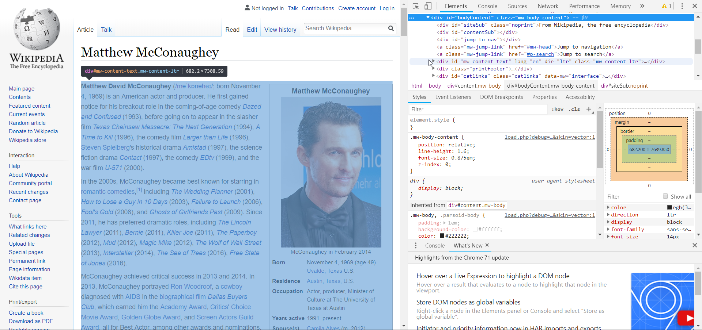
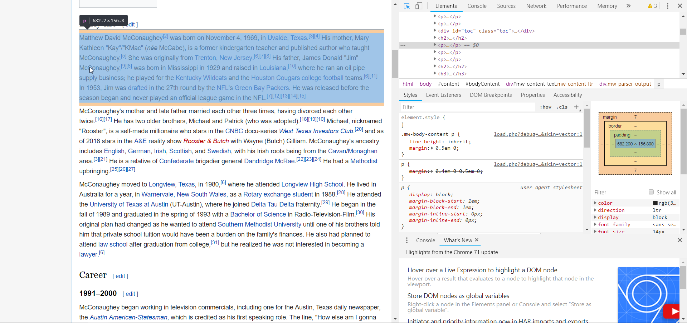
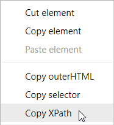
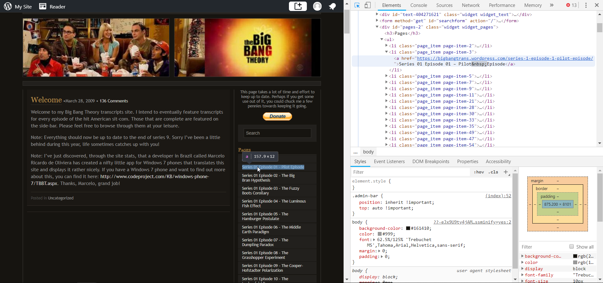

Recently, I helped a colleague scrape text from Wikipedia for a class project. If I didn’t know any web scraping technique, I would have had to copy and paste an infinite number of times to gather all the Wiki entries I needed. This would also have required going through at least four steps for each entry: 1) searching the page, 2) copying the content, 3) pasting it into a word processor, and 4) removing unwanted parts such as pictures. If I did this more than 5 times, I would already start to feel fatigued.
Web scraping can provide language data that can be used for a myriad of purposes in this world. For second language learning and teaching, it can be used to create a relatively large corpora from which we can generate lists of vocabulary, collocations, and/or lexical bundles. Such data would be particularly useful for English for Specific Purposes (ESP), English for Academic Purposes (EAP), and genre-based approaches.
In this post, I introduce how to scrape texts from the web along with (very skimpy) ideas for how to use the corpus for teaching. I have three examples. The first one is the longest because I explain how to inspect HTML information on websites.
The R package required for web scraping is rvest. I’ll also use the Google Chrome web browser to view page sources and inspect elements. However, Firefox and Edge also have this feature.
I was helping my colleague with scraping Wikipedia entries of American actors and actresses, with which he ultimatley aimed to create a corpus and extract lexical bundles. To collect a decent amount of language that is necessary for generating a list of lexical bundles, we scraped 210 articles which resulted in about a million word corpus.
First, I asked my colleague to make a list of actors that he wanted, because he only wanted to include well-known actors to ensure their wiki page has enough content and language. For Wikipedia, the web address consists of one fixed part, “https://en.wikipedia.org/wiki/” and another part, which is the name or title of the person/thing/topic. Therefore, I needed a list of names to generate page links and so that I could access each page. The following codes were used to read the list from an Excel file and put together the links.
library(rvest)
# Set working directory and read the file with actor list
# The data must have names that are capitalized (e.g., Brad Pitt)
df <- readxl::read_excel("Alist.xlsx")
# Create a list of the names: Take the first column and repace space with underscore
df$list <- gsub("\\s", "_", df[[1]])
# Create a list of web addresses for Wikipedia entries
df$urls <- paste0("https://en.wikipedia.org/wiki/", df$list)## # A tibble: 5 x 3
## Name list urls
## <chr> <chr> <chr>
## 1 Brad Pitt Brad_Pitt https://en.wikipedia.org/wiki/Brad_Pitt
## 2 Robert De Niro Robert_De_Niro https://en.wikipedia.org/wiki/Robert_De~
## 3 Tom Hanks Tom_Hanks https://en.wikipedia.org/wiki/Tom_Hanks
## 4 Leonardo DiCapr~ Leonardo_DiCap~ https://en.wikipedia.org/wiki/Leonardo_~
## 5 Johnny Depp Johnny_Depp https://en.wikipedia.org/wiki/Johnny_De~To extract the exact information you want on a web page, you need to study its HTML structure. This is probably the most time-consuming process. The structures also differ from website to website so my codes won’t work as they do here when scraping a different website. Here’s a general idea and a brief explanation of how to get what you need. This document I found online also has a good description of how web scraping with R works.
First, go to the web page that exemplifies your target content. With this example, I’ll go to the Wikipedia page of Matthew McConaughey to study the structure of a Wikipedia entry.
If you’re using Google Chrome, right-click on your mouse and click on ‘Inspect’ (Keyboard shortcut: Ctrl + Shift + I). This will open up a new pane on the right side of your screen with three sub-panes (Firefox has the same panes, just horizontally organized). Click on the small icon (a square with a pointer) at the top left corner of the newly opened pane to select the element from the web page (Keyboard shortcut: Ctrl + Shift + C). Once this icon is activated, move your mouse around on the content page until you see that what you want to scrape is highlighted in blue (see the picture below). Left-click on your mouse, and this will also highlight the corresponding line on the inspector pane on the right side.

Expand the line by clicking the small arrow (at the start of the line) and view the nested structure. In this case, I don’t want the little line right under title of the article that says “From Wikipedia, the free encyclopedia”. What I want is the body of the content, and this is under \<div id="mw-content-text" lang="en" ...\>.
What I find easier to look at is the texts that appear at the bottom of the top sub-pane. This lists the structure of the target content. Starting on the left side, from html, body, div#..., down to where you’re currently at.
I took the string #mw-content-text, which is the “ID” of the section that I want. The next command reads the html file from the web and extracts the target node. Don’t forget to include the hashtag, which indicates that it’s an ID (as in \<div ID=\>).
read_html("https://en.wikipedia.org/wiki/Matthew_McConaughey") %>%
html_nodes("#mw-content-text")## {xml_nodeset (1)}
## [1] <div id="mw-content-text" lang="en" dir="ltr" class="mw-content-ltr" ...If successful, it should have an output. If it says xml_nodeset (0), then it means nothing has been grabbed.
Moving on, under this node mw-content-text, I only want the text: not the pictures, not the table of contents, nor the information in the box. When a web page consists of paragraphs, texts usually appear after a <p>, which denotes a new paragraph. If you’re not sure, click on the little selector icon and hover over a paragraph to see what the dark bubble says (which should say “p” as in the picture below), or what becomes highlighed on the inspector pane (\<p\>...\</p\>). So I pipeline another code to get at this node:
read_html("https://en.wikipedia.org/wiki/Matthew_McConaughey") %>%
html_nodes("#mw-content-text") %>% html_nodes("p")## {xml_nodeset (27)}
## [1] <p class="mw-empty-elt">\n\n\n</p>
## [2] <p><b>Matthew McConaughey</b> (<span class="rt-commentedText nowrap ...
## [3] <p>In the 2000s, McConaughey became best known for starring in <a h ...
## [4] <p>McConaughey's portrayal of <a href="/wiki/Ron_Woodroof" title="R ...
## [5] <p>Matthew David McConaughey was born on November 4, 1969, in <a hr ...
## [6] <p>McConaughey's parents married each other three times, having div ...
## [7] <p>McConaughey moved to <a href="/wiki/Longview,_Texas" title="Long ...
## [8] <p>McConaughey began working in television commercials, including o ...
## [9] <p>After some smaller roles in <i><a href="/wiki/Angels_in_the_Outf ...
## [10] <p>By the early 2000s, he was frequently cast in <a href="/wiki/Rom ...
## [11] <p>McConaughey starred in the 2005 feature film <i><a href="/wiki/S ...
## [12] <p>McConaughey recognized that his "lifestyle, living on the beach, ...
## [13] <p>In 2012, McConaughey starred alongside <a href="/wiki/Channing_T ...
## [14] <p>In 2013, he portrayed <a href="/wiki/Ron_Woodroof" title="Ron Wo ...
## [15] <p>During this time, McConaughey recorded a public service announce ...
## [16] <p>In 2014, he shared star billing with <a href="/wiki/Woody_Harrel ...
## [17] <p>McConaughey also played Cooper, a widowed father and astronaut, ...
## [18] <p>In 2016, McConaughey was hired as <a href="/wiki/Creative_direct ...
## [19] <p>McConaughey starred as <a href="/wiki/Randall_Flagg" title="Rand ...
## [20] <p>McConaughey met <a href="/wiki/Camila_Alves" title="Camila Alves ...
## ...
Now we have captured all nodes relevant to the information we want. However, the codes here so far only read the meta-language of the HTML and not the actual text we want to grab. To extract the text, add html_text() to the pipeline.
read_html("https://en.wikipedia.org/wiki/Matthew_McConaughey") %>%
html_nodes("#mw-content-text") %>% html_nodes("p") %>% html_text()## [1] "\n\n\n"
## [2] "Matthew McConaughey (/m<U+0259>'k<U+0252>n<U+0259>he<U+026A>/; born November 4, 1969) is an American actor and producer. He first gained notice for his supporting performance in the coming-of-age comedy Dazed and Confused (1993), which is considered by many to be the actor's breakout role.[1][2][3] After a number of supporting roles in films including Angels in the Outfield and Texas Chainsaw Massacre: The Next Generation (1994), McConaughey's breakthrough performance as a leading man came in the legal drama A Time to Kill (1996). He followed this with leading performances in the science fiction film Contact (1997) and the historical drama Amistad (1997), the comedy-drama The Newton Boys (1998), the satire EDtv (1999), the war film U-571 (2000) and the psychological thriller Frailty (2001).\n"
## [3] "In the 2000s, McConaughey became best known for starring in romantic comedies,[4] including The Wedding Planner (2001), How to Lose a Guy in 10 Days (2003), Failure to Launch (2006), Fool's Gold (2008), and Ghosts of Girlfriends Past (2009), establishing McConaughey as a sex symbol. After a two-year hiatus from film acting, McConaughey began to appear in more dramatic roles beginning with the legal drama The Lincoln Lawyer (2011). He was acclaimed for his supporting performances in Bernie (2011) and Magic Mike (2012) and The Wolf of Wall Street (2013) and for his leading roles in Killer Joe (2011) and Mud (2012).[5]"
## [4] "McConaughey's portrayal of Ron Woodroof, a cowboy diagnosed with AIDS, in the biopic Dallas Buyers Club (2013) earned him widespread praise and numerous accolades, including the Academy Award for Best Actor. In 2014, he starred as Rust Cohle in the first season of HBO's crime anthology series True Detective, for which he was nominated for the Primetime Emmy Award for Outstanding Lead Actor in a Drama Series. His film roles since have included Interstellar (2014), The Sea of Trees (2015), Free State of Jones and Gold (2016) and The Dark Tower (2017), earning varying degrees of commercial and critical success, as well as voiceover work in Kubo and the Two Strings and Sing (2016). \n"
## [5] "Matthew David McConaughey was born on November 4, 1969, in Uvalde, Texas.[6] His mother, Mary Kathleen \"Kay\"/\"KMac\" (née McCabe), is a former kindergarten teacher and published author who taught McConaughey.[7] She was originally from Trenton, New Jersey.[8] His father, James Donald \"Jim\" McConaughey,[9] was born in Mississippi in 1929 and raised in Louisiana,[10] where he ran an oil pipe supply business; he played for the Kentucky Wildcats and the Houston Cougars college football teams.[11] In 1953, Jim was drafted in the 27th round by the NFL's Green Bay Packers. He was released before the season began and never played an official league game in the NFL.[12]"
## [6] "McConaughey's parents married each other three times, having divorced each other twice.[13] He has two older brothers, Michael and Patrick (who was adopted).[14] Michael, nicknamed \"Rooster\", is a self-made millionaire who stars in the CNBC docu-series West Texas Investors Club,[15] and as of 2018 stars in the A&E reality show Rooster & Butch with Wayne (Butch) Gilliam. McConaughey's ancestry includes English, German, Irish, Scottish, and Swedish, with some of his Irish roots being from the Cavan/Monaghan area.[6] He is a relative of Confederate brigadier general Dandridge McRae.[16] He had a Methodist upbringing.[17]"
## [7] "McConaughey moved to Longview, Texas, in 1980,[8] where he attended Longview High School. He lived in Australia for a year, in Warnervale, New South Wales, as a Rotary exchange student in 1988.[18] He attended the University of Texas at Austin (UT-Austin), where he joined Delta Tau Delta fraternity.[19] He began in the fall of 1989 and graduated in the spring of 1993 with a Bachelor of Science in Radio-Television-Film.[20] His original plan had changed as he wanted to attend Southern Methodist University until one of his brothers told him that private school tuition would have been a burden on the family's finances. He also had planned to attend law school after graduation from college,[21][full citation needed] but he realized he was not interested in becoming a lawyer.[8]"
## [8] "McConaughey began working in television commercials, including one for the Austin, Texas daily newspaper, the Austin American-Statesman, which is credited as his first speaking role. The line, \"How else am I gonna keep up with my 'Horns?\" – a reference to his beloved Texas Longhorns sports teams – gave the local community a look at the young actor before he was cast in Richard Linklater's film Dazed and Confused.[22] In 1992, he was cast as \"Joe\" in Trisha Yearwood's music video \"Walkaway Joe\".[23]"
## [9] "After some smaller roles in Angels in the Outfield, Texas Chainsaw Massacre: The Next Generation, Boys on the Side, and the television series Unsolved Mysteries, McConaughey's big break came as the lawyer Jake Brigance in the film A Time to Kill (1996), based on the John Grisham novel of the same name.[24] In the late 1990s, McConaughey was cast in leading roles in more movies, including Contact, Amistad, The Newton Boys, EDtv and U-571.[25]"
## [10] "By the early 2000s, he was frequently cast in romantic comedies, including The Wedding Planner and How to Lose a Guy in 10 Days, both of which were successful at the box office.[26] During this period, he appeared as a firefighter in the low-budget film Tiptoes, with Kate Beckinsale, in Two for the Money as a protégé to Al Pacino's gambling mogul, and in Frailty with Bill Paxton, who also directed.[25][27]"
## [11] "McConaughey starred in the 2005 feature film Sahara, along with Steve Zahn and Penélope Cruz.[28] Prior to the release of the film, he promoted it by sailing down the Amazon River and trekking to Mali.[29] That same year, McConaughey was named People magazine's \"Sexiest Man Alive\" for 2005.[30] In 2006, he co-starred with Sarah Jessica Parker in the romantic comedy Failure to Launch and as Marshall head football coach Jack Lengyel in We Are Marshall. McConaughey also provided voice work in an ad campaign for the Peace Corps in late 2006.[31] He replaced Owen Wilson in Ben Stiller's Tropic Thunder after Wilson's suicide attempt.[32] On January 21, 2008, McConaughey became the new spokesman for the national radio campaign, \"Beef: It's What's for Dinner\", replacing Sam Elliott.[33][34]"
## [12] "McConaughey recognized that his \"lifestyle, living on the beach, running with my shirt off, doing romantic comedies\" had caused him to be typecast for certain roles, and he sought dramatic work with other themes.[35] He said:\n"
## [13] "In 2012, McConaughey starred alongside Channing Tatum in Magic Mike, based on Tatum's early life, which was directed by Steven Soderbergh.[36] He returned to his East Texas roots, working again with director Richard Linklater on Bernie, playing district attorney Danny Buck Davidson.[37] In June 2012, McConaughey was invited to join the Academy of Motion Picture Arts and Sciences.[38]"
## [14] "In 2013, he portrayed Ron Woodroof in Dallas Buyers Club. The role of a rodeo rider who discovers he has AIDS and struggles to get treatment required him to lose nearly 50 lb (22 kg).[39] The film earned McConaughey many acting awards, including the Screen Actors Guild Award for Outstanding Performance by a Male Actor in a Leading Role, the Golden Globe Award for Best Actor – Drama, and the Academy Award for Best Actor.[40][41] His co-star Jared Leto won the Academy Award for Best Supporting Actor, making Dallas Buyers Club the first film since Mystic River (2003) to win both awards.[42][43] He also featured in Martin Scorsese's The Wolf of Wall Street as Mark Hanna, an early boss of Jordan Belfort.[44]"
## [15] "During this time, McConaughey recorded a public service announcement in Austin, Texas for the LBJ Presidential Library.[45] In April 2014, Time magazine included McConaughey in its annual Time 100 as one of the \"Most Influential People in the World\".[46] In August 2014, the Lincoln Motor Company signed a multi-year collaboration with McConaughey for an ad campaign. The commercials, directed by Nicolas Winding Refn (Drive), featured McConaughey as a storyteller driving around in Lincoln's MKC crossover.[47] Shortly after the commercials debuted in September 2014, they were parodied by Ellen DeGeneres, Conan O'Brien, Jim Carrey, South Park, and Saturday Night Live. Overall sales for Lincoln increased by 25 percent one month after the ads debuted.[48] The series of commercials starring McConaughey continued for several more years; during this period he also endorsed the MKZ sedan and MKX crossover.\n"
## [16] "In 2014, he shared star billing with Woody Harrelson in HBO's crime drama anthology series True Detective.[49] For his role as Rust Cohle, he won the Critics' Choice Television Award for Best Actor in a Drama Series.[50] He was also nominated for the Primetime Emmy Award for Outstanding Lead Actor in a Drama Series, which he lost to Bryan Cranston and the Golden Globe Award for Best Actor – Miniseries or Television Film.[51][52][51] With his first Oscar win and the critical acclaim received for True Detective, \"McConaughey seems to be tapping into something essential, remaining himself while stretching, getting older while staying the same age.\" Critic Rachel Syme dubbed his recognition and performances while taking on more complex, dramatic roles as \"The McConaissance\".[53]"
## [17] "McConaughey also played Cooper, a widowed father and astronaut, alongside Anne Hathaway, Jessica Chastain, Michael Caine, Mackenzie Foy, and Casey Affleck in Christopher Nolan's science fiction film Interstellar (2014).[54] After finishing Gus Van Sant's 2015 film The Sea of Trees with Ken Watanabe,[55] in 2016, McConaughey starred in two films, Free State of Jones and Gold, and voiced leading characters in two animated films, Kubo and the Two Strings and Sing.\n"
## [18] "In 2016, McConaughey was hired as creative director and celebrity spokesman for Wild Turkey's latest campaign, to bring in more women and more international customers.[56]"
## [19] "McConaughey starred as Walter Padick in the 2017 Stephen King adaptation The Dark Tower, which received negative reactions from the critics.[57][58][59][60] In 2018, he starred in the true life gangster drama White Boy Rick,[61] which gained mixed reviews. In 2019, he headlined the erotic thriller Serenity, that also starred Diane Lane and Anne Hathaway. The film was panned by both critics and audiences after its release on January 25.[62] McConaughey next had the starring role in Harmony Korine's The Beach Bum, a comedy also featuring Zac Efron and Jonah Hill. The film was released on March 29, 2019.[63][64]"
## [20] "McConaughey met Camila Alves in 2006. He and Alves became engaged on December 25, 2011, and were married in a private Catholic ceremony[65] on June 9, 2012, in Austin, Texas, where they reside.[66][67] Together, they have three children: a first son born in July 2008,[68] a daughter born in January 2010,[69] and a second son born in December 2012.[70]"
## [21] "McConaughey is a Christian and attends a non-denominational church.[71]"
## [22] "On November 17, 2014, McConaughey received a star on the Hollywood Walk of Fame, located on 6931 Boulevard [72]"
## [23] "McConaughey started the just keep livin foundation, which is \"dedicated to helping teenage kids lead active lives and make healthy choices to become great men and women\".[73] On February 25, 2016, McConaughey received the Creative Conscience award from unite4:humanity for his work with his foundation.[74]"
## [24] "McConaughey rescued various pets stranded after the flooding of New Orleans from Hurricane Katrina.[75]"
## [25] "In 2019, McConaughey officially became a professor of practice for the Department of Radio-Television-Film at the Moody College of Communication in his alma mater, UT-Austin; he had served as a visiting instructor since 2015.[76][77] The first two sessions were about the filming of the movie Free State of Jones.[78]"
## [26] "McConaughey is a lifelong Redskins fan, having begun following the team because of Chris Hanburger and his support of the Indians in Cowboy and Indian Western Movies. He even claims to have attended the last Redskins game at RFK Stadium and first game at Jack Kent Cooke Stadium as well as the first one at the renamed FedEx Field.[79] He is also a lifelong fan of the Texas Longhorns, the team of his alma mater.[80] In 2019, he became a minority owner of Austin FC, a team in Major League Soccer scheduled to begin play in 2021.[81]"
## [27] "Template:IndependentSpiritBestMaleLead 2000–2020\nTemplate:Independent Spirit Award for Best Supporting Male 2000–2020\n"You can see that this code has extracted the 25 paragraphs that appear in Matthew McConaughey’s wiki.

A shortcut/alternative is to use XPath. You can obtain the XPath by selecting the line that corresponds to the target element on the inspector pane, then by right clicking the mouse to choose: Copy - Copy XPath.
The XPath I got here, //*[@id="mw-content-text"]/div/p, specifies that I want all texts under the node \<p\> nested under this particular \<div\> node.
read_html("https://en.wikipedia.org/wiki/Matthew_McConaughey") %>%
html_nodes(xpath = '//*[@id="mw-content-text"]/div/p') %>%
html_text()## [1] "\n\n\n"
## [2] "Matthew McConaughey (/m<U+0259>'k<U+0252>n<U+0259>he<U+026A>/; born November 4, 1969) is an American actor and producer. He first gained notice for his supporting performance in the coming-of-age comedy Dazed and Confused (1993), which is considered by many to be the actor's breakout role.[1][2][3] After a number of supporting roles in films including Angels in the Outfield and Texas Chainsaw Massacre: The Next Generation (1994), McConaughey's breakthrough performance as a leading man came in the legal drama A Time to Kill (1996). He followed this with leading performances in the science fiction film Contact (1997) and the historical drama Amistad (1997), the comedy-drama The Newton Boys (1998), the satire EDtv (1999), the war film U-571 (2000) and the psychological thriller Frailty (2001).\n"
## [3] "In the 2000s, McConaughey became best known for starring in romantic comedies,[4] including The Wedding Planner (2001), How to Lose a Guy in 10 Days (2003), Failure to Launch (2006), Fool's Gold (2008), and Ghosts of Girlfriends Past (2009), establishing McConaughey as a sex symbol. After a two-year hiatus from film acting, McConaughey began to appear in more dramatic roles beginning with the legal drama The Lincoln Lawyer (2011). He was acclaimed for his supporting performances in Bernie (2011) and Magic Mike (2012) and The Wolf of Wall Street (2013) and for his leading roles in Killer Joe (2011) and Mud (2012).[5]"
## [4] "McConaughey's portrayal of Ron Woodroof, a cowboy diagnosed with AIDS, in the biopic Dallas Buyers Club (2013) earned him widespread praise and numerous accolades, including the Academy Award for Best Actor. In 2014, he starred as Rust Cohle in the first season of HBO's crime anthology series True Detective, for which he was nominated for the Primetime Emmy Award for Outstanding Lead Actor in a Drama Series. His film roles since have included Interstellar (2014), The Sea of Trees (2015), Free State of Jones and Gold (2016) and The Dark Tower (2017), earning varying degrees of commercial and critical success, as well as voiceover work in Kubo and the Two Strings and Sing (2016). \n"
## [5] "Matthew David McConaughey was born on November 4, 1969, in Uvalde, Texas.[6] His mother, Mary Kathleen \"Kay\"/\"KMac\" (née McCabe), is a former kindergarten teacher and published author who taught McConaughey.[7] She was originally from Trenton, New Jersey.[8] His father, James Donald \"Jim\" McConaughey,[9] was born in Mississippi in 1929 and raised in Louisiana,[10] where he ran an oil pipe supply business; he played for the Kentucky Wildcats and the Houston Cougars college football teams.[11] In 1953, Jim was drafted in the 27th round by the NFL's Green Bay Packers. He was released before the season began and never played an official league game in the NFL.[12]"
## [6] "McConaughey's parents married each other three times, having divorced each other twice.[13] He has two older brothers, Michael and Patrick (who was adopted).[14] Michael, nicknamed \"Rooster\", is a self-made millionaire who stars in the CNBC docu-series West Texas Investors Club,[15] and as of 2018 stars in the A&E reality show Rooster & Butch with Wayne (Butch) Gilliam. McConaughey's ancestry includes English, German, Irish, Scottish, and Swedish, with some of his Irish roots being from the Cavan/Monaghan area.[6] He is a relative of Confederate brigadier general Dandridge McRae.[16] He had a Methodist upbringing.[17]"
## [7] "McConaughey moved to Longview, Texas, in 1980,[8] where he attended Longview High School. He lived in Australia for a year, in Warnervale, New South Wales, as a Rotary exchange student in 1988.[18] He attended the University of Texas at Austin (UT-Austin), where he joined Delta Tau Delta fraternity.[19] He began in the fall of 1989 and graduated in the spring of 1993 with a Bachelor of Science in Radio-Television-Film.[20] His original plan had changed as he wanted to attend Southern Methodist University until one of his brothers told him that private school tuition would have been a burden on the family's finances. He also had planned to attend law school after graduation from college,[21][full citation needed] but he realized he was not interested in becoming a lawyer.[8]"
## [8] "McConaughey began working in television commercials, including one for the Austin, Texas daily newspaper, the Austin American-Statesman, which is credited as his first speaking role. The line, \"How else am I gonna keep up with my 'Horns?\" – a reference to his beloved Texas Longhorns sports teams – gave the local community a look at the young actor before he was cast in Richard Linklater's film Dazed and Confused.[22] In 1992, he was cast as \"Joe\" in Trisha Yearwood's music video \"Walkaway Joe\".[23]"
## [9] "After some smaller roles in Angels in the Outfield, Texas Chainsaw Massacre: The Next Generation, Boys on the Side, and the television series Unsolved Mysteries, McConaughey's big break came as the lawyer Jake Brigance in the film A Time to Kill (1996), based on the John Grisham novel of the same name.[24] In the late 1990s, McConaughey was cast in leading roles in more movies, including Contact, Amistad, The Newton Boys, EDtv and U-571.[25]"
## [10] "By the early 2000s, he was frequently cast in romantic comedies, including The Wedding Planner and How to Lose a Guy in 10 Days, both of which were successful at the box office.[26] During this period, he appeared as a firefighter in the low-budget film Tiptoes, with Kate Beckinsale, in Two for the Money as a protégé to Al Pacino's gambling mogul, and in Frailty with Bill Paxton, who also directed.[25][27]"
## [11] "McConaughey starred in the 2005 feature film Sahara, along with Steve Zahn and Penélope Cruz.[28] Prior to the release of the film, he promoted it by sailing down the Amazon River and trekking to Mali.[29] That same year, McConaughey was named People magazine's \"Sexiest Man Alive\" for 2005.[30] In 2006, he co-starred with Sarah Jessica Parker in the romantic comedy Failure to Launch and as Marshall head football coach Jack Lengyel in We Are Marshall. McConaughey also provided voice work in an ad campaign for the Peace Corps in late 2006.[31] He replaced Owen Wilson in Ben Stiller's Tropic Thunder after Wilson's suicide attempt.[32] On January 21, 2008, McConaughey became the new spokesman for the national radio campaign, \"Beef: It's What's for Dinner\", replacing Sam Elliott.[33][34]"
## [12] "McConaughey recognized that his \"lifestyle, living on the beach, running with my shirt off, doing romantic comedies\" had caused him to be typecast for certain roles, and he sought dramatic work with other themes.[35] He said:\n"
## [13] "In 2012, McConaughey starred alongside Channing Tatum in Magic Mike, based on Tatum's early life, which was directed by Steven Soderbergh.[36] He returned to his East Texas roots, working again with director Richard Linklater on Bernie, playing district attorney Danny Buck Davidson.[37] In June 2012, McConaughey was invited to join the Academy of Motion Picture Arts and Sciences.[38]"
## [14] "In 2013, he portrayed Ron Woodroof in Dallas Buyers Club. The role of a rodeo rider who discovers he has AIDS and struggles to get treatment required him to lose nearly 50 lb (22 kg).[39] The film earned McConaughey many acting awards, including the Screen Actors Guild Award for Outstanding Performance by a Male Actor in a Leading Role, the Golden Globe Award for Best Actor – Drama, and the Academy Award for Best Actor.[40][41] His co-star Jared Leto won the Academy Award for Best Supporting Actor, making Dallas Buyers Club the first film since Mystic River (2003) to win both awards.[42][43] He also featured in Martin Scorsese's The Wolf of Wall Street as Mark Hanna, an early boss of Jordan Belfort.[44]"
## [15] "During this time, McConaughey recorded a public service announcement in Austin, Texas for the LBJ Presidential Library.[45] In April 2014, Time magazine included McConaughey in its annual Time 100 as one of the \"Most Influential People in the World\".[46] In August 2014, the Lincoln Motor Company signed a multi-year collaboration with McConaughey for an ad campaign. The commercials, directed by Nicolas Winding Refn (Drive), featured McConaughey as a storyteller driving around in Lincoln's MKC crossover.[47] Shortly after the commercials debuted in September 2014, they were parodied by Ellen DeGeneres, Conan O'Brien, Jim Carrey, South Park, and Saturday Night Live. Overall sales for Lincoln increased by 25 percent one month after the ads debuted.[48] The series of commercials starring McConaughey continued for several more years; during this period he also endorsed the MKZ sedan and MKX crossover.\n"
## [16] "In 2014, he shared star billing with Woody Harrelson in HBO's crime drama anthology series True Detective.[49] For his role as Rust Cohle, he won the Critics' Choice Television Award for Best Actor in a Drama Series.[50] He was also nominated for the Primetime Emmy Award for Outstanding Lead Actor in a Drama Series, which he lost to Bryan Cranston and the Golden Globe Award for Best Actor – Miniseries or Television Film.[51][52][51] With his first Oscar win and the critical acclaim received for True Detective, \"McConaughey seems to be tapping into something essential, remaining himself while stretching, getting older while staying the same age.\" Critic Rachel Syme dubbed his recognition and performances while taking on more complex, dramatic roles as \"The McConaissance\".[53]"
## [17] "McConaughey also played Cooper, a widowed father and astronaut, alongside Anne Hathaway, Jessica Chastain, Michael Caine, Mackenzie Foy, and Casey Affleck in Christopher Nolan's science fiction film Interstellar (2014).[54] After finishing Gus Van Sant's 2015 film The Sea of Trees with Ken Watanabe,[55] in 2016, McConaughey starred in two films, Free State of Jones and Gold, and voiced leading characters in two animated films, Kubo and the Two Strings and Sing.\n"
## [18] "In 2016, McConaughey was hired as creative director and celebrity spokesman for Wild Turkey's latest campaign, to bring in more women and more international customers.[56]"
## [19] "McConaughey starred as Walter Padick in the 2017 Stephen King adaptation The Dark Tower, which received negative reactions from the critics.[57][58][59][60] In 2018, he starred in the true life gangster drama White Boy Rick,[61] which gained mixed reviews. In 2019, he headlined the erotic thriller Serenity, that also starred Diane Lane and Anne Hathaway. The film was panned by both critics and audiences after its release on January 25.[62] McConaughey next had the starring role in Harmony Korine's The Beach Bum, a comedy also featuring Zac Efron and Jonah Hill. The film was released on March 29, 2019.[63][64]"
## [20] "McConaughey met Camila Alves in 2006. He and Alves became engaged on December 25, 2011, and were married in a private Catholic ceremony[65] on June 9, 2012, in Austin, Texas, where they reside.[66][67] Together, they have three children: a first son born in July 2008,[68] a daughter born in January 2010,[69] and a second son born in December 2012.[70]"
## [21] "McConaughey is a Christian and attends a non-denominational church.[71]"
## [22] "On November 17, 2014, McConaughey received a star on the Hollywood Walk of Fame, located on 6931 Boulevard [72]"
## [23] "McConaughey started the just keep livin foundation, which is \"dedicated to helping teenage kids lead active lives and make healthy choices to become great men and women\".[73] On February 25, 2016, McConaughey received the Creative Conscience award from unite4:humanity for his work with his foundation.[74]"
## [24] "McConaughey rescued various pets stranded after the flooding of New Orleans from Hurricane Katrina.[75]"
## [25] "In 2019, McConaughey officially became a professor of practice for the Department of Radio-Television-Film at the Moody College of Communication in his alma mater, UT-Austin; he had served as a visiting instructor since 2015.[76][77] The first two sessions were about the filming of the movie Free State of Jones.[78]"
## [26] "McConaughey is a lifelong Redskins fan, having begun following the team because of Chris Hanburger and his support of the Indians in Cowboy and Indian Western Movies. He even claims to have attended the last Redskins game at RFK Stadium and first game at Jack Kent Cooke Stadium as well as the first one at the renamed FedEx Field.[79] He is also a lifelong fan of the Texas Longhorns, the team of his alma mater.[80] In 2019, he became a minority owner of Austin FC, a team in Major League Soccer scheduled to begin play in 2021.[81]"The results are same as with the first method. Because the text from each paragraph becomes one element in R (25 paragraphs mean 25 elements), I’ll collapse all paragraphs in my final code with the paste function.
# Loop through the names and collect texts
for (n in 1:nrow(df)) {
# scrape text from the content body
df$text[[n]] <- read_html(df$urls[[n]]) %>%
html_nodes(xpath = '//*[@id="mw-content-text"]/div/p') %>%
html_text() %>%
paste0(collapse = "")
# print progress to detect if and where a problem occurs
print(paste(df$list[[n]], "- Complete"))
}
# Clean the text by removing the footnote numbers
df$text <- gsub("\\[\\d{1,3}\\]", " ", df$text)Because my colleague wanted to use AntConc in the next step, I saved each text as its own text file.
# Save the text for each actor in .txt format. Use the name as filename.
for (m in 1:length(df$text)) {
write(df$text[[m]], paste0(df$list[[m]], ".txt"))
}There has been a lot of research to create vocabulary or phrase lists for a specific genre or sub-genre (often relevant to academic writing). The more interesting and perhaps more useful method for teaching would be putting such word lists into context to show what sorts of words are used where in a written text in what genre. In other words, what’s the language that is typically used in a specific context? For instance, Cortes (2013)1 analyzed lexical bundles that are frequently used to serve certain purposes in the introduction section of research articles (as implied in the title, “The purpose of this study is to: Connecting lexical bundles and moves in research article introductions”).
In the scraping process above, I collapsed all paragraphs together but texts can be categorized differently to find which words or collocations are frequently used in the first paragraph, in the last paragraph, etc., so that learners can make connections between language and its function. When teaching or giving a task that requires writing a movie review, reviews written by real people can be scraped from the Internet and be analyzed as learning materials. Such summary of large, linguistic data will allow learners to see the relationship between linguistic choice and the context (e.g., register, genre, task).
Blogs on specialized topics are great sources of language data. If the posts are well-categorized and/or tagged, you can easily navigate to a page where the posts of your interest are listed, and you can go from there for web scraping.
In this example, I scrape the transcripts for the TV series, the Big Bang Theory.
This blog has all transcripts from 10 seasons. In the previous example, someone had to manually create a list to generate URLs for web pages. This time, the URLs themselves will be extracted from a web page. I went through a process of inspecting the websites to first extract the links to each page that contains the transcript, then extracting the text from each page. This blog conveniently lists links to all posts on the widget that appears on your right.

The current example is what usually would be the case with the URLs that exist as meta-data. I extracted the attribute <a href> by using html_attr("href").
bbt_url <- "https://bigbangtrans.wordpress.com"
bbt_html <- read_html(bbt_url)
bbt_links <- bbt_html %>%
html_nodes(xpath = '//*[@id="pages-2"]/ul/li/a') %>%
html_attr("href")Because the list of the links includes an introduction post that I don’t need, I excluded the first link when I saved the links as a data frame. Also, I changed the link column to character strings.
bbt_table <- data.frame(link = bbt_links[-1])
bbt_table$link <- as.character(bbt_table$link)I will experiment with the first 5 episodes. Note that I’m switching between HTML and XPath to give some different examples.
bbt_ex <- dplyr::slice(bbt_table, 1:5)
for (n in 1:nrow(bbt_ex)) {
bbt_ex$text[[n]] <- read_html(bbt_ex$link[[n]]) %>%
html_nodes(".entrytext") %>%
html_nodes("p") %>%
html_text() %>%
paste0(collapse = "")
}What I like about this example is that, although scripted, it provides spoken language data which is rarer than written. Thinking in terms of gathering spoken language (or at least something close), you can try finding transcripts of TV shows, movies, news, and other broadcasts.
The Big Bang Theory corpus created here could be used to identify which episode has the target grammar or vocabulary you want to teach. For example, if I want to show a clip that has one or more instances of using a specific idiom or a phrasal verb, I can use this corpus I’ve built to locate which episode has that particular phrase - which can be a huge time saver.
Further linguistic analysis could provide a useful list of collocations, phrasal verbs, or other expressions, as well as how they are used in conversations. After coming up with a list of collcations, (either with software such as AntConc or methods such as this n-gram analysis), you can give the list to learners and ask them to make a conversation using these words. After that, you can watch how these expressions are actually used in the TV show.
With further text processing, corpora of different characters from the show can also be built. The Big Bang Theory is probably too difficult for learners with all the technical jargon, but if your students regularly watch a TV show, such as the timeless classic, Friends, you can give them a list of words and phrases that a character often uses and have students engage in reconstructing scripts and role playing.
In this last example, I scrape recent articles from the Social Issues Opinion section on CNN. Your result will be different from what appears on this post because this list of articles is constantly being updated. Be sure to comply with the terms of use and not violate their copyright.
News opinion pieces can be thought of as a type of argumentative writing, and so you may want to conduct a move analysis combined with collocations. You can use sites such as Google News, to select a specific category and scrape news on that specific topic to create a vocabulary/phrase list for English for Specific Purposes. This will assist learners with learning frequently used expressions which they are likely to encounter when studying or working.
This post was inspired by the course, LLT 809: Teaching Second Language Reading and Writing (Instructor: Dr. Charlene Polio). Please feel free to share your thoughts!
Codes were last updated on 09/25/2019.
Cortes, V. (2013). The purpose of this study is to: Connecting lexical bundles and moves in research article introductions. Journal of English for Academic Purposes, 12, 33-43. http://dx.doi.org/10.1016/j.jeap.2012.11.002.↩
4.1 . Social Commentary from CNN
This example similar to the previous example, but I spent more time inspecting the page elements in order to figure out how to pull the links to each article and the main texts. Here’s how it went down:
The
articlenode contains the xml information of each article. Two hundred article information will be collected from this page.I needed to extract only the link to the article. Upon inspection, I found that
data-vr-contentboxwas the attribute that included the link. I created a data frame with the links so I can store only the URL there. Note that thislinkcolumn needs to be character (rather than factor) to avoid error in a later stage.In order to grab texts from these articles, I needed to view one or multiple articles and find out how to extract the text from the it. I looped through ten articles as an example here.
I ran into a problem where the URL format varied depending on the type of the article, namely, the interactive articles. The links for these articles began with “https://www.cnn.com” whereas ordinary articles did not. I removed the interactive ones by excluding links that began with “https”. Then I added a column which included the actual web address.
The title of the article appeared under the node
\<h1\>and the article was under\<div id="article-body"\>. I used this information to store the title and content of each article. Each article contains about 1,000 words and now I have a 200,000-word corpus.